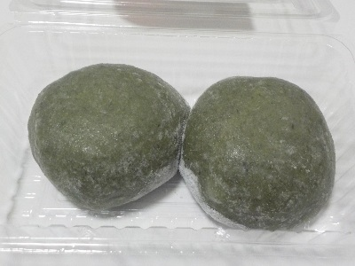
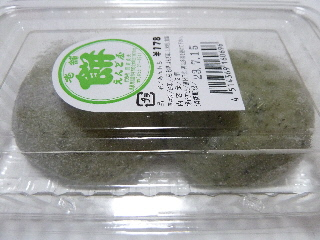

えんど屋のよもぎあん餅はもちもちです。
2024/06/28

パンでもご飯でもお菓子でも、もちもちで美味しいってよく聞くようになりました。
でも、本物のもちもちは全然違いますね。
似た感じの大福やお団子ももちもちですが、お餅のもちもちが一番好きだな。
島根県出雲市今市町北本町2丁目7-10
2024/06/28

パンでもご飯でもお菓子でも、もちもちで美味しいってよく聞くようになりました。
でも、本物のもちもちは全然違いますね。
似た感じの大福やお団子ももちもちですが、お餅のもちもちが一番好きだな。
2011/07/14
あんまりお餅って買って食べないんですが、2個で178円ならいいかも？って買いました。
最近菓子パンでも1個200円近くしちゃうので、こうゆう選択もありだなと思いました。

お饅頭じゃなくて普通のお餅なので、早く食べないと固くなります。
お餅やさんのお餅なので、しっかりついてあって美味しいですね。
よもぎの味が濃いめでした。